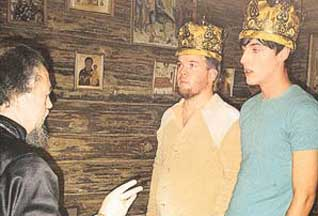

| Наступление сатаны |
| Я очень хорошо знаю г.Горький (теперь Нижний Новгород), где прожил в общей сложности около 5 лет, а для Строгановской церкви в свое время делал фотоальбом. |
| Тем печальнее для меня эта новость, о которой ниже помещена статья. В городе нашелся Иуда в очередной раз продавший Христа за деньги. |
| Но тем значимее для нас, верующих Богу людей, вопрос: как могло произойти такое кощунство, когда практически все церкви заявляют о своей приверженности Библии, как Слову Божию? |
| Нам известно лицемерие власть имеющих, но представить, что во главе гей-парадов
будут идти премьер-министры и мэры крупнейших городов планеты, было невозможно
еще 10 лет назад. Сатана в наступлении! |
|  |
До вчерашнего дня Дениса Гоголева и Михаила Морозова знали только в Нижнем Новгороде. Как гей-пару. А теперь их узнает весь мир. Два парня устроили скандал планетарного масштаба. Накануне они обвенчались в церкви. Настоящей. Благословил их тоже настоящий - действующий - священник.
Кстати, о намерении обвенчаться Денис и Михаил объявляли открыто в телеэфире. Их пригласили на программу "Принцип "Домино" (после того как Миша возжелал поучаствовать в женском конкурсе "Мисс Нижний Новгород-2003", но его туда не допустили). Своим намерением они испугали даже смелую Хангу.
"Церковь на это не пойдет!" - испугалась Елена Ханга. Все присутствовавшие в студии дружно закивали. И тем не менее...
Геи долго ломали головы, кто и где может их обвенчать. Вспомнили об отце Владимире, который крестил их в начале лета в Рождественской церкви (она же - Строгановская, построенная на средства нижегородского купца Строганова).
"Как он брал деньги! - вспоминает Денис Гоголев. - Просто рвал из рук! Я и подумал: он нам подойдет..."
И... он сразу согласился?
Бровью не повел. Разъяснений, что мы совершаем что-то предосудительное, не было. Он сразу начал рассуждать о том, как нас обвенчать без свидетелей. Я сам удивился тому, что он даже не дрогнул.
Денис, а сколько вы предложили отцу Владимиру за совершение обряда?
Когда мы крестились, то вместо 100 рублей с человека, положенных "по тарифу", заплатили по тысяче. И когда обговаривали венчание (оно стоит 1500), я сказал батюшке: "Давайте по тому же принципу. Умножим сумму на 10". Он согласился. То есть 15 тысяч...
Сперва священник пригласил их в храм, при котором служил, в августе: "Приходите часиков в 8. Я всех выдворю - скажу, что "новые русские" на исповедь пришли..."
Но в тот раз церемонию пришлось отложить. Вечером в Строгановской церкви православные отмечали праздник успения Божией - Матери. Батюшка извинился перед клиентами за то, что забыл (!) об этом большом празднике. Да и вообще, по его мнению, нужно было отказаться от идеи венчаться в храме. Лучше в часовенке - уютнее и безопаснее...
Место для венчания решительная парочка геев нашла уже к понедельнику. Каким путем им достались ключи от крохотной часовни на одной из центральных улиц Нижнего, Денис и Михаил умалчивают. Но уверяют, что ее настоятель совершенно не в курсе, ради чего они попросились в часовню. По нашей информации, Денис просто сказал ему, что хочет тайно обвенчаться с девушкой, родители которой против их любви.
В 16.00 1 сентября Денис, Михаил и отец Владимир прибыли к деревянной часовне с куполом. Геи взялись за руки, сделали торжественные лица и встали перед алтарем. Отец Владимир, приготовив все необходимое и положив на алтарь чин венчания, начал читать молитвы. Потом, прервавшись, спросил пару дрогнувшим голосом:
А кто из вас какую роль исполняет?
Нам все равно, отче, - ответил Денис, - мы оба - супруги...
Подумав пару секунд, батюшка пробасил: "Венчается раб божий Михаил рабе божией Дионисии..."
Отец Владимир, хотя в нем и чувствовалась лихорадочная торопливость, ничего из обряда не пропустил. Один раз для порядка буркнул: "Срам!"
Однако церемонии не прервал...
| Заместитель председателя отдела внешних церковных связей Московской патриархии протоиерей Всеволод Чаплин: - Православная церковь не приемлет даже развод, а к венчанию людей одного пола вообще относится крайне отрицательно. Поэтому нас очень беспокоит, что некоторые западные конфессии начинают благословлять отношения гомосексуалистов. Православный священник, естественно, не имеет права венчать однополых партнеров. За это он может быть лишен своего сана! |
| Генеральный секретарь Конференции католических епископов России отец Игорь Ковалевский: - В опубликованном 31 июля с. г. Ватиканом документе "Соображения относительно предложений о законодательном признании союзов между лицами гомосексуальной ориентации" говорится, что Римская католическая церковь заключение таких союзов категорически не поддерживает. Невозможно представить, что кто-то из наших священников согласился бы совершить подобный обряд. Более того, мы отрицательно относимся к регистрации "однополых браков" светскими властями. В то же время наша церковь считает, что мужчины и женщины с гомосексуальными наклонностями имеют право на уважение, сочувствие и понимание и ни в коем случае не должны подвергаться дискриминации в обществе. |
| Председатель Конгресса еврейских религиозных организаций и объединений России раввин Зиновий Коган: - Таких людей, возможно, не стоит преследовать. Но однополый брак нами не приветствуется: это грех. Ведь нарушается одна из самых главных заповедей Господа: плодиться и размножаться. |
| Секретарь Центрального духовного управления мусульман России Абдуссамад Хазрат: - Это очень большой грех, который ведет за собой наказание Всевышнего. |
| Пастор евангелическо-лютеранского кафедрального собора святых Петра и Павла города Москвы отец Дмитрий Лотов: - Это вопиющее преступление против Слова Божьего. Евангелическо-лютеранская церковь в России категорически не приемлет подобных браков. Если наш священник возьмет на себя такой грех, то он будет отлучен от церкви. Как поместная церковь, мы не несем ответственности за позицию по указанному вопросу лютеранских церквей в других странах, в частности, в Голландии. |